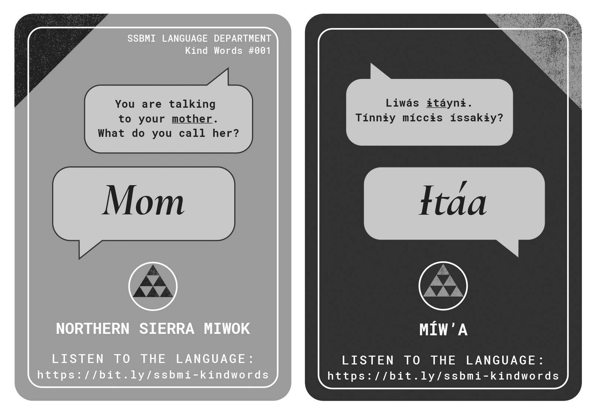
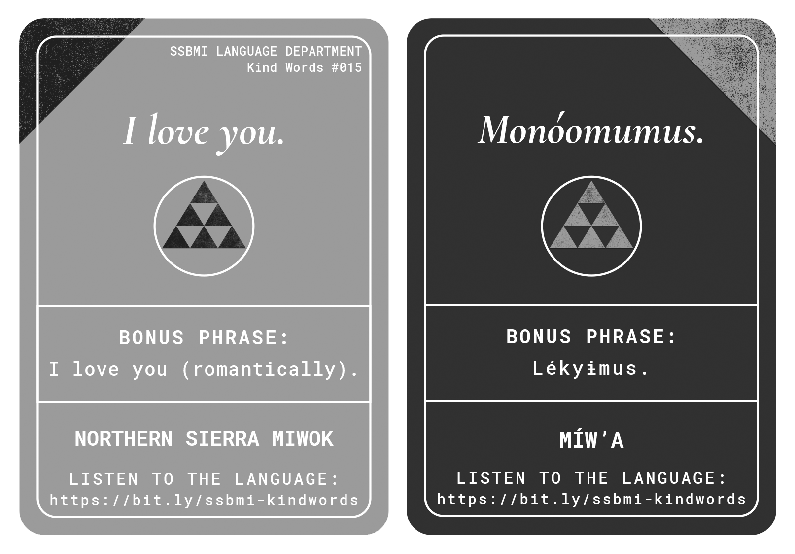

The SSBMI Language Department created this set of flashcards to support you and your loved ones as you learn words for relatives and phrases of kindness in Northern Sierra Miwok. Here, you can listen to the language on the Kind Words in Northern Sierra Miwok cards and learn more.
The Northern Sierra Miwok language that we share comes from many speakers like Eph Cummings and others who worked with C. Hart Merriam in the early 1900s, and Queenie Miller, Elena McCauley, & Nicolas Villa Sr. who worked with linguist Catherine Callaghan on the Northern Sierra Miwok dictionary (1987). To the best of our knowledge, speakers of all dialects of Northern Sierra Miwok share these words and phrases.
However, there are often differences between Northern Sierra Miwok and other Miwok languages. For example, compare the word for 'friend' in Northern Sierra Miwok (sáke), Central Sierra Miwok (áyyɨɨ), and Plains Miwok (ótta).
Learn in chunks: Instead of trying to learn all thirty cards at once, try learning five cards per week.
Challenge yourself: If you like a challenge, try timing yourself when you review with the flashcards and try to beat your best time.
Learn in several ways: In addition to quizzing yourself with the flashcards, you can also learn by listening to the language, sounding the language out, writing the language down, and most importantly, using the language in real life.
Personalize the language and use it in real life: You can combine terms for relatives and phrases from these cards when talking to your family. For example, combine the name Amáa (Grandma) with Monóomumus (I love you) to say "I love you, Grandma".
Use spaced repetition: Learn one day and review the language the next day. Letting a day go by between learning and reviewing lets the language take root and grow.
Use two decks to play memory games: Shuffle each deck. Lay out one deck Miwok-side up and the other deck English-side up. If playing with another learner, take turns trying to match phrases in the two languages. When all the cards are matched, the player with the most matches wins. If playing by yourself, aim for accuracy and speed!
Terms for Relatives
Language Note
Why do the cards specify "You are talking to your..."? In English, we can use the same word for a family member when we are talking to them and when we are talking about them. For example, it's normal to say things like "Hey Mom, can I eat this?" and "My mom is coming for a visit." In the first case, you're talking directly to your mom, and in the second case, you're talking about her.
In Northern Sierra Miwok, you use different terms in these two contexts for most words for family members (in most, but not all cases, you hold the last vowel sound of the word a little longer when you are talking to them). We designed these cards to highlight that the context can matter when choosing your words in Miwok. Here are a couple example terms where this contextual information changes what you say:
Mother (card #001)
When you are talking about your mom (or anyone else's mom), you use the term ɨ́ta (mom, mother). When you are talking to your mom, you call her ɨtáa (mom, mother):
Ɨ́ta
'Mom, Mother' (when talking about her)
Ɨtáa
'Mom, Mother' (when talking to her)

Grandfather (card #006)
When you are talking about your grandfather (or anyone else's grandfather), you use the term páapa (grandfather). When you are talking to your grandfather, you call him papáa (grandfather):
Páapa
'Grandfather' (when talking about him)
Papáa
'Grandfather' (when talking to him)
Wife (card #012)
When you are talking about your wife (or anyone else's wife), you use the term óssa (wife). When you are talking to your wife, you call her osáa (wife):
In English, we can say things like "I love you" to just one person or to more than one person; the word 'you' is the same in both cases (though we sometimes say things like "I love you guys" when we are talking to more than one person).
In Northern Sierra Miwok, there are different words for 'you (one person)' versus for 'you (two or more people)'. The phrases in these flashcards that have 'you' in them are all directed at just one person.
For example, you could say Monóomumus (I love you) when talking to one person, but you would use different language to say the same thing to a group of two or more people.

The Flashcards
015 - I love you
Monóomumus.
'I love you.'
Lékyɨmus.
'I love you.' (romantically)
016 - Take care of yourself
Okóoyupo’.
'Take care of yourself.'
Okóoyupoc.
'Take care of yourselves.'
Heads-up: Remember that in Northern Sierra Miwok you use different language to talk to one person versus a group of people. You can use the phrase Okóoyupoc (Take care of yourselves) when talking to a group of two or more people.
017 - You are nice
Ṭaṭéṭṭin.
'You are nice.'
018 - You are strong
Híllalan.
'You are strong.'
019 - You are brave
Yalɨ́mme’wan.
'You are brave.'
020 - You sing well
Kucíisɨ mɨ́llis.
'You sing well.'
021 - You dance well
Kucíisɨ káltɨs.
'You dance well.'
022 - You speak well
Kucíisɨ liwás.
'You speak well.'
023 - You make me laugh
Hɨyáknamu.
'You make me laugh.'
024 - You make me happy
Apóynamu.
'You make me happy.'
025 - You make me feel good
Hɨŋáanamu.
'You make me feel good.'
026 - You've done well
Énsakkas.
'You've done well.'
027 - Thank you
Hɨ́ŋŋamus.
'Thank you.'
(literal meaning: 'I appreciate you.')
028 - Thank you
Hɨ́ŋŋam.
'Thank you.'
(literal meaning: 'I appreciate it.')
029 - I'm sorry
Liwá’ŋenak.
'I'm sorry.'
(literal meaning: 'I acted meanly.')
030 - I'm sorry
Eyáhŋemus.
'I'm sorry.'
(literal meaning: 'I feel pity for you.')
Hɨ́y’ɨksɨ’saynɨs aa ecá’? (Do you want to know more?)